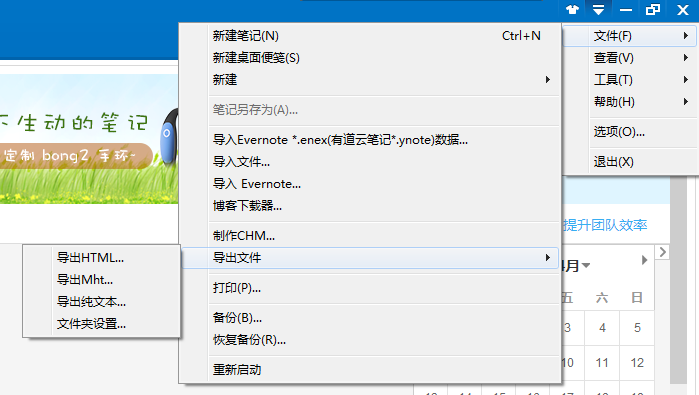
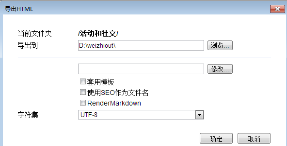
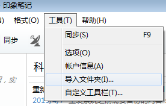
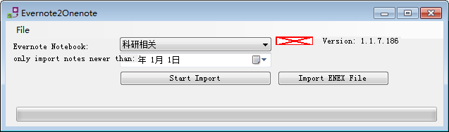
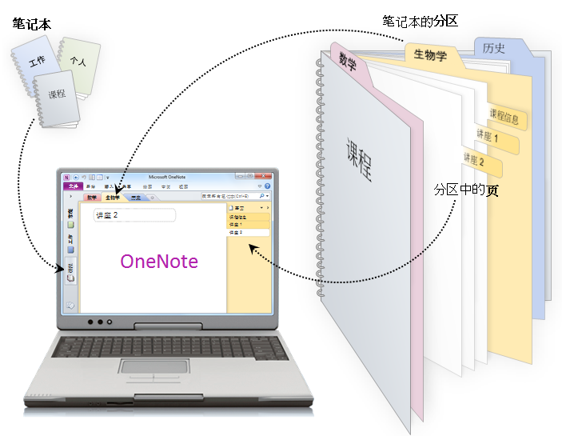

为知笔记到OneNote的迁移以及OneNote发布静态博客
2015年4月9日
9:53
不吹不黑，为知笔记其实是一个相当不错的笔记软件，尤其是对于Markdown和mathjax之类的支持，在其他的笔记软件中较为少见。但是，为知笔记始终有几个难以突破的问题：
（1）非PC端客户端实在有点丑
（2）多次修改笔记后，后台的html格式会变得很乱
（3）在日常工作和交流文件依然固定在office系列的情况下，为知笔记的内容难以直接转化
于是，借着OneNote免费的时机，将笔记系统转移到OneNote，以下记录迁移过程。
首先，需要做如下准备：
1、安装一个Evernote，申请一个账号
2、安装OneNote
2013，地址：http://www.onenote.com/Download
3、下载工具软件Evernote2Onenote，地址：http://stefanstools.sourceforge.net/Evernote2Onenote.html
安装Evernote的原因是为知笔记的导出内容似乎并不能直接导入OneNote,因此采用EverNote作为中转。
然后，在为知笔记中选择需要导出的文件夹，在菜单中选择文件->导出文件->导出HTML：

需要注意的是，导出的编码记得改成UTF-8：

导出后，打开并登陆Evernote，建立一个笔记本，之后在菜单中选择工具->导入文件夹：

导入完成后，打开Evernote2Onenote工具，选择刚才建立的Evernote笔记本，import即可

请注意，在import之前一定要关闭OneNote，另外，导入的过程可能在个别文章会出错，这些文章手动导入就行了（直接全选粘贴到OneNote就可以）
既然写到了这里，大概简介一下OneNote的特点吧：
1、为知笔记是基于html的，每一个笔记都是一个html，所以在编写笔记的时候，有很明显的“网页”感。内容的组织方面，也是线性的顺序，和一般的文章类似。而OneNote中并没有任何空间上的限制，各种内容像PPT那样随意排列。可以认为，OneNote的每一个笔记页，都是一页可以无限延展的涂鸦本，通过放大缩小可以容纳任意扩展的内容。从这一点上看，OneNote更像一个没有格子的传统笔记本，或者一张空白的可缩放的A4纸，更加适合不拘一格的笔记形式。
2、OneNote的组织方式有三个层次：笔记本、分区和页面，其自带的示意图非常好懂：

3、OneNote的内容与Office系的其他软件兼容性当然是很好的，可以直接转成doc文档。虽然不那么喜欢office系，但是不得不承认的是，日常活动中还是没法完全离开office唉。
最后，简要介绍一下如何使用OneNote发布静态博客（这一篇就是这样发布的），使用的是pelican。
其实过程非常简单：
1、OneNote另存为doc
2、doc另存为html
3、html加入元信息，修正图片链接（自动生成的图片包括一个大图和一个小图，默认是显示小图的，比较模糊，需要手工改一下html源码）